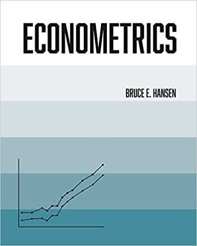

Hansen中高级计量体系

前言
手稿未出版，盛名已远扬。计量泰斗Hansen Bruce个人官网的传奇大作《Econometrics》，2022年终于横空出世，正式出版了。
Hansen B. Econometrics[M]. Princeton: Princeton University Press, 2022.
作为硕士和博士的中高级计量讲义，如果能将之引入中国，传播给国内学子，绝对是大功一件。
本项目志在如此，希望能与同道之士携手努力，大家共献绵薄，各展所长，日进寸功，添砖加瓦，展示其中的精奥！
本项目的在线网址 https://hansenem.netlify.app.
本项目完全开源，代码公开于两个托管平台（完全同步）：gihub仓库https://github.com/huhuaping/hansenEM，以及gitee仓库https://gitee.com/kevinhhp/hansenEM
本项目将基于
R编程语言生态，并使用全新的出版工具Quarto进行书稿展示。
如果有兴趣参与本项目，请联系huhuaping01[at]qq.com